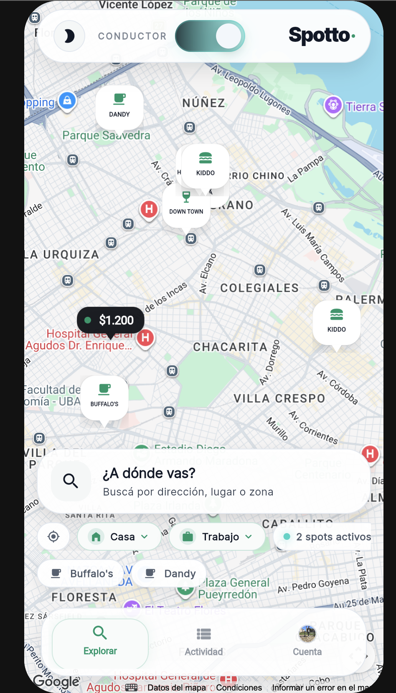

Una capa de decisión urbana: planes, barrios, señales y parking contextual en un solo mapa.
Ver brandbook
Spotto junta lo que normalmente está separado: dónde ir, qué conviene y dónde dejar el auto.
Logo, color y tipografía como sistema unificado. Si algo rompe la consistencia, no es Spotto.
Spotto habla como una herramienta que ayuda a resolver. No como una corporación, no como un influencer gastronómico.
Más que componentes aislados, Spotto se reconoce en cómo resuelve el mapa, el discovery y el parking en una sola pantalla.
Discovery no es una capa social. Es una guía urbana corta para elegir mejor y estacionar cerca.
Si no pasa este filtro, no sale.
La marca se siente como una herramienta urbana inteligente: simple, clara, confiable y con calle.